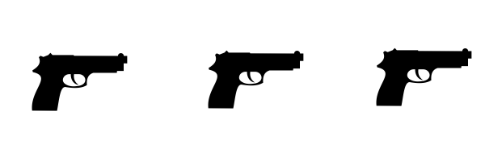
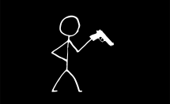
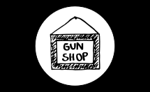
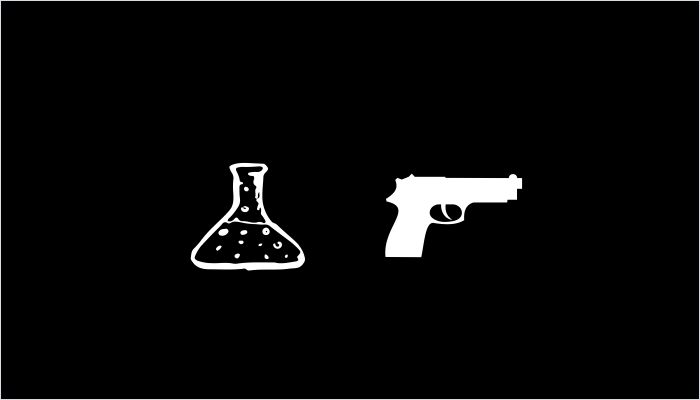

CLICK TO VIEW OR COLLAPSE GRAPHIC
A gun is fired.
The shooter tosses it and flees.
Bullets at the scene are collected by police for analysis at the county crime lab.
Police recover the gun and enter details into their tracing system.
The ATF provides info on the gun's original buyer.
The Pennsylvania State Police provide information on last known sale.
The gun is tested in the crime lab. It is fired and ballistics are matched to bullets from other scenes.
Once police know where the gun came from and where it ended up...
Now they have to find the shooter.